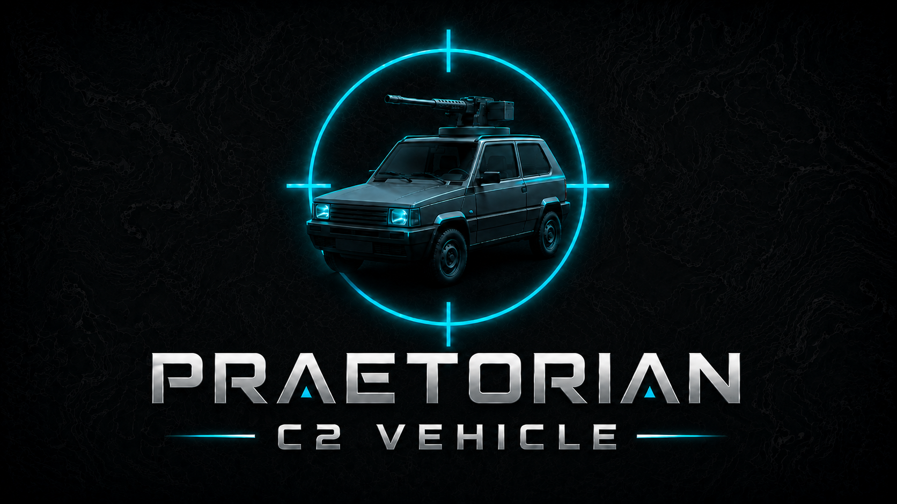
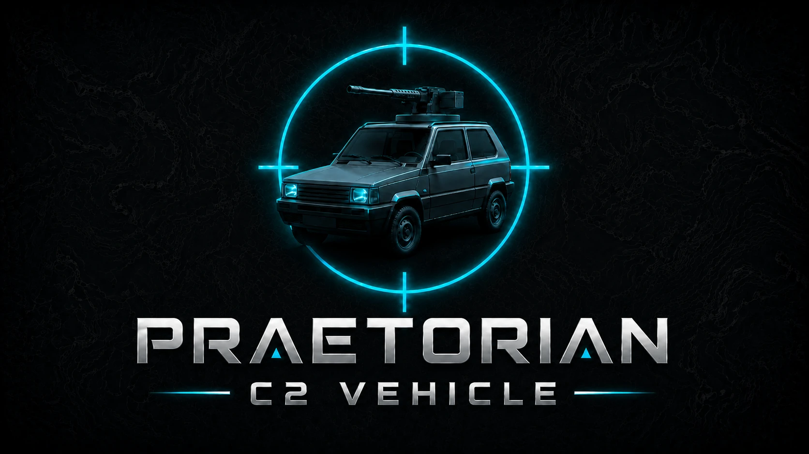

COP
Common operational picture
Present and manage operational information through a vehicle-oriented interface.


Praetorian C2 Vehicle is distributed free of charge as a Windows installer, with manuals, configuration resources and an expanding plugin ecosystem for TAK interoperability.
A public distribution hub for the application, documentation, configuration files and ATAK integration components.
Present and manage operational information through a vehicle-oriented interface.
Designed around interoperable tactical data exchange and CoT-based workflows.
The available ATAK plugin extends integration with the wider TAK ecosystem.
Organize maps, tracks and mission-relevant data into a coherent tactical view.
Download manuals, data sheets and spreadsheets required for installation and setup.
Built for controlled environments where operators need direct ownership of deployment and configuration.

Each GitHub release can contain the Windows installer, user manuals, configuration spreadsheets, checksums and ATAK plugin packages.
Explore the interface, tactical workflow and core capabilities of Praetorian C2 Vehicle.
Open the official trailer on YouTube to see the platform in operation.
Praetorian C2 Vehicle v1.1 is available now. See how LEGIO Mode works and follow its operational workflow step by step.
Watch the official LEGIO Mode walkthrough on YouTube.
Complete operator guide available in Italian and English.
Two-sided overview of Praetorian C2 Vehicle and its principal tactical capabilities.
Brochure unavailableAccess the available ATAK integration package, technical details and official project resources.
Explore plugins